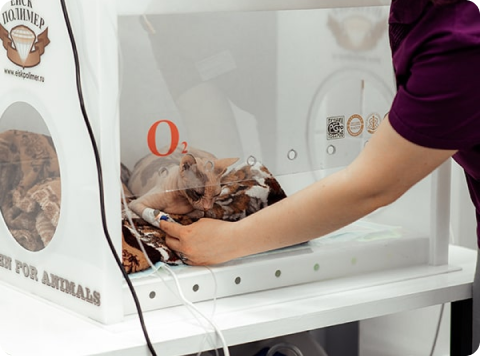
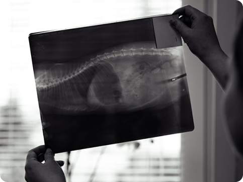
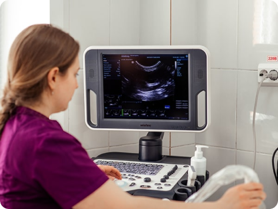

Услуги
Терапия
Первичные услуги
Ветеринарная клиника « Лимпопо » предлагает консультации и лечение
для домашних животных по предварительной записи для вашего удобства. Во время консультации наши опытные
ветеринары будут тщательно обследовать и лечить ваших домашних животных
и обсудят любые вопросы, которые могут у вас возникнуть
об их здоровье или поведении. Дополнительные диагностические процедуры, такие как анализы крови
и мочи, будут назначены при необходимости.
Вы можете абсолютно бесплатно получить консультацию
ветеринарного врача онлайн – оптимальный способ экономии денег
и времени! Для этого можете оставить заявку и подробно описать сложившуюся
ситуацию. Чуть позже, врач сделает звонок Вам
и обсудит текущую проблему, способы ее решиния и скажет, что
необходимо делать.
В случае невозможности решения проблемы при консультации
вам будет назначен прием ветеринара. Специалист осмотрит вашего питомца и назначит квалифицированное лечение.
Акцент всегда делается на минимальность инвазивной терапии.


Периодичность профилактических осмотров
Если обнаружены явные проблемы в организме,
или в целом вам важно поддержание здоровья питомца, обращение к терапевту
является важным и нужным. Регулярные осмотры у ветеринарных терапевтов –
залог благополучной жизни животных. Своевременная диагностика позволяет
поддерживать состояние здоровья домашнего животного в хорошем состоянии
и выявлять потенциальные проблемы, прежде чем они станут серьезными. Чем
регулярнее будут визиты к врачу, тем в большей безопасности будет находиться
ваш питомец, он привыкнет к осмотрам специалистов, они перестанут вызывать
у него стресс, и это облегчит будущие визиты в клинику.
Полный перечень услуг и цен можете посмотреть в нашем прайс-листе.

Лучше спросить, чем отложить!
Если Вас тревожит состояние вашего питомца,
либо есть вопросы, но Вы стесняетесь их задавать, помните: «лучше
позвонить и получить ответ, чем переживать за своего любимца или
запустить проблему до более тяжелого состояния».
+7 (391) 215-55-94